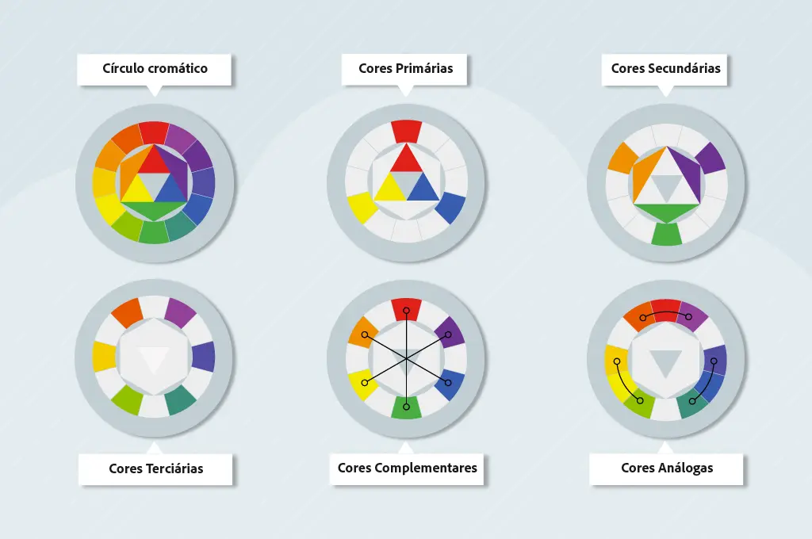

A Importância das cores
As cores desempenham um papel fundamental na comunicação e na percepção visual. Elas podem influenciar emoções, criar identidade e melhorar a usabilidade de interfaces.
Nós podemos representar cores no HTML e no CSS de várias maneiras, como nomes de cores, valores "rgb", valores "hex" e valores "hsl".
Significado das cores
- Vermelho: Associado à paixão, energia e urgência. É frequentemente usado para chamar atenção.
- Amarelo: Evoca otimismo, alegria e criatividade. É uma cor vibrante que pode ser usada para destacar elementos importantes.
- Laranja: Combina a energia do vermelho com a alegria do amarelo. É uma cor estimulante e amigável.
- Verde: Representa natureza, crescimento e equilíbrio. É frequentemente usado em contextos relacionados à saúde e sustentabilidade.
- Azul: Transmite calma, confiança e segurança. É uma escolha popular para ambientes corporativos e tecnológicos.
- Roxo: Associado à criatividade, luxo e mistério. É uma cor que pode adicionar sofisticação a um design.
- Marrom: Evoca estabilidade, confiabilidade e conforto. É uma cor terrosa que pode ser usada para transmitir uma sensação de segurança.
- Preto: Representa elegância, poder e formalidade. É uma cor versátil que pode ser usada para criar contraste e destaque.
- Branco: Simboliza pureza, simplicidade e clareza. É frequentemente usado como cor de fundo para criar um design limpo e minimalista.
- Cinza: Transmite neutralidade, equilíbrio e sofisticação. É uma cor versátil que pode ser usada como base para outros elementos de design.
- Rosa: Evoca feminilidade, delicadeza e romance. É uma cor frequentemente associada a produtos e serviços voltados para o público feminino.
Como as cores funcionam
As cores vão nos afetar de diferentes formas, sejam atráves da emoção e sentimentos, como dito acima, ou por conta de sua harmonia e contraste.
Essa segunda situação ocorre por conta de algo chamado de círculo cromático, nada mais é, que, um guia de cores.

Com base no circulo cromático, podemos criar combinações de cores que são agradáveis aos olhos, como cores complementares, análogas e triádicas, ou até mesmo cores monocromáticas. Essas combinações podem ser usadas para criar designs visualmente atraentes e harmoniosos.
Saindo da cor sólida
Além das cores sólidas, podemos utilizar gradientes, que são transições suaves entre duas ou mais cores. Os gradientes podem adicionar profundidade e interesse visual aos elementos de design.
Para isso, utilizamos a propriedade "background: " no CSS, especificando as cores e a direção do gradiente. Em complemento a isso, podemos utilizar também, as seguintes propriedades:
- linear-gradient - Gera uma gradiente linear. Também podemos definir a direção do gradiente com: to right, to left, to top, to bottom, to top right, to top left, to bottom right e to bottom left
- radial-gradient - Gera uma gradiente Circular
- conic-gradient - Gera uma gradiente em forma de cone